A Gentle Introduction to Kuka iiwa and Drake in Python
This document serves as a quick introduction to Kuka IIWA Robot and controlling it using Drake Python API. The examples are entirely in python and is easy to port to any other robot manipulator. Make sure you read the official Kuka documentation and is familiar with the functioning before operating the robot.
The codes of the examples used in this document are available at https://github.com/achuwilson/pydrake_iiwa
Contents
- Introduction
- Kuka System Architecture
- Programming the Robot
- Smartpad and Workbench Video Walk-through
- Controlling IIWA from ROS
- Controlling IIWA from MATLAB/Simulink/Python
- Drake
- LCM
- Controlling IIWA from Drake
- Controlling Custom Robot from Drake
- Manipulation Station
-
Examples
- Joint Control
- Visualizing the robot state in Drake visualizers
- Adding an end effector
- Forward Kinematics
- Inverse Kinematics
- Estimating Cartesian Velocities
- Cartesian velocity control
- Estimating Cartesian forces
- Hybrid Force-Position control
- Motion Planning and Collision Avoidance
- Gravity Compensation
- Haptic Force Feedback
Introduction
Kuka LBR IIWA is a 7 DOF collaborative robot manipulator which has got excellent torque control capabilities in addition to the common position control features. This enables capabilities like impedance control which is much beneficial when the robot has to interact with noisy environment models, where pure position control can break things (or even the robot). The robot has joint torque sensors on all the joints. ( It should be noted that the torque estimation is not as accurate as an external Force-Torque sensor. It is observed that the error depends on robot pose and has an accuracy of approximately 5N)
Kuka System Architecture
A typical architecture of the manipulation station will be as follows:
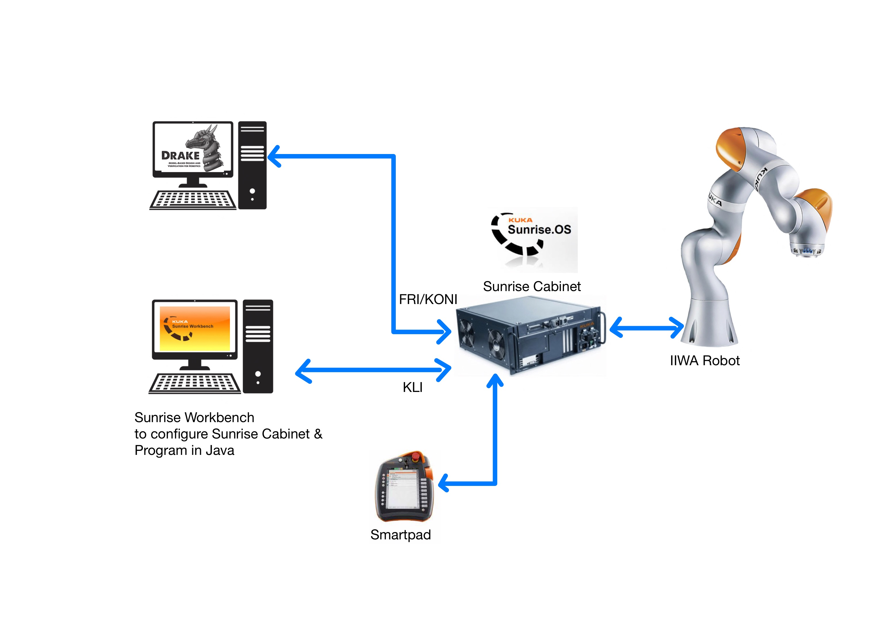
IIWA manipulator is controlled by Kuka Sunrise Cabinet controller. It has an industrial PC running Kuka’s version of Windows CE called Sunrise OS and a realtime OS. The sunrise OS handles the user program, GUI etc and is accessible to the user. The realtime part is hidden from the user and controls the low level hardware interfaces.
The Sunrise Cabinet have multiple Ethernet interfaces. Kuka Line Interface (KLI) (Port X66) is the only one enabled by default and is used to connect the Controller to an external PC. Kuka provides Sunrise Workbench IDE with which the IIWA could be programmed in Java. The IDE also helps installing software packages and configuring settings such as network and safety configurations, input-output etc.
The other interface called Fast Robot Interface (FRI) enables access to the robot controller from an external computer in real time. It operates over the Kuka Optional Network Interface (KONI) and has to be enabled by installing the FRI package. Drake uses this interface to interface with the IIWA hardware.
Additional interfaces like EtherCAT, PROFINET are also available, which can be enabled by installing the corresponding software package from Kuka.
Kuka Smartpad, the handheld controller allows to start and stop the programs loaded into the SunriseCabinet. In fact, it shows the remote desktop view of the Sunrise OS running inside the Cabinet. Connecting an external monitor to the DVI port on the back side of the Sunrise Cabinet also shows the same Smartpad GUI. In addition, it is also possible to access the Smartpad GUI using Remote Desktop tools over the KLI ethernet port.
The following are the default IP address of the Ethernet Ports:
KLI : 172.31.1.147
KONI FRI : 192.170.10.2
Remote Desktop: 172.31.1.147
Username: KukaUser
Password: 68kuka1secpw59
The following documents give a detailed overview of the Kuka IIWA Robot systems. It is recommended to get familiarized with the IIWA system from the following documents before operating the robot.
- KUKA Sunrise.OS 1.16, Operating Instructions for End Users
- KUKA Sunrise Cabinet Operating Instructions
- System Software KUKA Sunrise.OS 1.16, KUKA Sunrise.Workbench 1.16, Operating and Programming Instructions for System Integrators. This document has Java API documentation
NOTE: the linked documents could not be shared publicly as it would violate Kuka’s Copyright notice and require IISc login. You could also create a free account on Kuka Xpert to download these
Programming the Robot
Kuka basically provides the following two methods to program the robot
- Kuka Sunrise Workbench
- FRI
Kuka Sunrise Workbench
The default programming option provided by Kuka is through its Java APIs using Sunrise Workbench, which is in-fact a customized Eclipse IDE. It is not available for download on the Kuka website, as it has to match the version of the Sunrise OS running on the controller, So request for your copy of Sunrise Workbench to your Kuka robot supplier.
The Java APIs may differ slightly depending upon the version of the Sunrise OS and Workbench that is being used. It is available in the Kuka Sunrise Workbench Operating and Programming Instructions
After developing an application in the Sunrise Workbench, the user has to synchronize it with the Sunrise OS in the controller. This just copies the project files to the controller over the KLI port.
Download Links
- Kuka Sunrise Workbench v1.16
- FRI Addon
- SmartServo Addon
- HRC Addon
- Sample Sunrise Project
- FRI Client SDK C++
NOTE: While creating a new project and synchronizing it with the Controller, after changing any safety related settings, the SmartPad would show a “safety configuration not activated” error. The default password to activate the safety configuration is ARGUS
After loading them, applications can be selected and executed using the
Smartpad interface. The Key on the Smartpad helps switch between AUT - automatic and T1 - reduced velocity mode.
FRI
FRI stands for “Fast Robot Interface”, which is an addon provided by Kuka, enables real time control of the robot system. This requires control signals be generated in an external computer and sent over the KONI Ethernet port. The FRI is not enabled out of the box and has to be installed and enabled through the Sunrise workbench. The default IP address of the FRI interface is 192.170.10.2
Kuka provides FRI-Client libraries in C++ and Java, which can be found inside the examples directory after the installation of FRI library in Sunrise WorkBench. The C++ libraries can be found in the file named FRI-Client-SDK_Cpp.zip. It can be used to build applications that communicates with Kuka controller over FRI.
Drake uses the FRI interface to control the IIWA from an external computer.
Smartpad and Workbench Video Walk-through
TODO #1
Controlling IIWA from ROS
The
iiwa_stack package can be used to interface IIWA from ROS. It uses the Smart Servoing functionality over the KLI network interface.
The ROSJava nodes running on the robot controller as a Sunrise RobotApplication sends data and receives commands from a ROS master running on the external PC. The wiki provides detailed instructions on controlling from ROS.
Controlling IIWA from MATLAB/Simulink/Python
- The Kuka Sunrise Toolbox for Matlab allows control of the LBR iiwa robot from MATLAB.
- The [Simulink-iiwa interface] (https://github.com/Modi1987/Simulink-iiwa-interface) for Simulink based control.
- iiwaPy can be used for control of the iiwa from Python.
All of the above packages are based on the Kuka Sunrise Toolbox for Matlab.
Drake
Drake is a toolbox which can model dynamic systems, solve mathematical problems and has built in multibody kinematics and dynamics.
Running the examples requires installation of Python bindings of Drake as documented here. These were tested in Ubuntu 18.04 with binary installation of Drake.
Systems
The basic building block of Drake is a System, which has input and output ports as well as an optional state. Multiple systems can be interconnected either as a Diagram or LeafSystem. LeafSystems are the minimum building block and is often used for basic components like sensors, actuators, controllers, planners etc, which has a specific functionality. Drake come with many built-in systems which can be found in the
official documentation
Diagrams
Diagrams consists of multiple LeafSystems or even other Diagrams inside and are used to represent a set of interconnected systems that function as a whole.
example_drake_simplediagram.py creates a simple diagram which looks as follows:
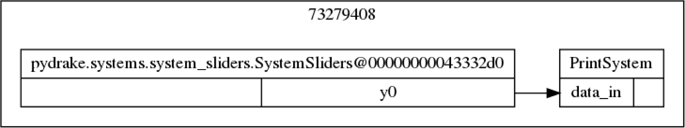
The built-in SystemSlider is used to create a GUI with 3 sliders, whose output is fed into a PrintSystem which evaluates and prints the input values to terminal at a specific update rate.
Context
All Diagram and System has a Context which embodies the state and parameters of the system. In addition to the Context of the main diagram, each subsystems and sub diagrams have their own unique context with with we can interact with the internals of the systems. Given the context, all methods called on a Diagram or System is deterministic and repeatable. The Simulator needs the Diagram and its Contextfor running the computations.
MultibodyPlant
MultibodyPlant is one of the most important built-in systems that Drake provides. It is used to represent multiple rigid bodies connected in tree, a common practice with serial robot manipulators. It internally uses rigid body tree algorithms to compute the kinematics. MultibodyPlant also has both inputs and outputs which could be connected to other systems such as controllers or visualizers.
Tutorials
Drake provides a set of tutorials
dynamical_systems.ipynb gives an introduction to modelling systems in Drake
mathematical_program.ipynb introduces numerical programming capabilities of Drake
LCM
LCM stands for Lightweight Communications and Marshalling. It is a set of libraries that can provide publish/subscribe message passing capabilities.
LCM implementatoions are available for all common programming languages and operating systems. Refer to the LCM example for a quick-start.
Plotting LCM Messages
Drake includes drake-lcm-spy in /opt/drake/bin to plot and visualize LCM messages.
Controlling IIWA from Drake
The following diagram shows a typical architecture of a Drake based system for controlling the iiwa.
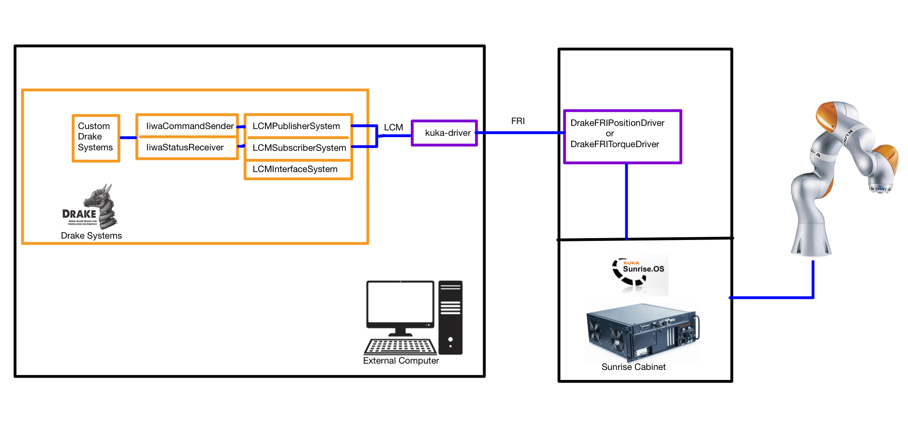
DrakeFRIPositionDriver and DrakeFRITorqueDriver are Java applications built using the Sunrise Workbench and running inside the Sunrise Controller. They open an FRI connection at a specified network port, to which an external computer can connect to.
kuka_driver is a C++ application built using the FRI-Client-SDK-Cpp and runs on the external computer. It communicates with the Sunrise Controller over the FRI/KONI interface. It also publishes and subscribes LCM messages which can be used by other programs to read/write data to the iiwa robot.
Drake has a built in LCMInterfaceSystem which allows drake systems to publish and subscribe to LCM messages. Other Drake systems make use of these systems to communicate with the hardware.
Drake IIWA Java Application
The Java application runs on the on the Sunrise Controller and opens an FRI connection to which the kuka_driver running on an external computer connects to.
The detailed documentation and code is available in
drake-iiwa-driver
There are two applications
- DrakeFRIPositionDriver
- DrakeFRITorqueDriver
The DrakeFRIPositionDriver, as the name implies allows controlling the robot in position control mode, taking in joint position commands.
The DrakeFRITorqueDriver allows for the control of the robot in impedance control mode and takes in joint position as well as joint feed-forward torque commands. We would be using this mode more often.
Both the drivers output robot status like joint positions, velocities, torques etc
kuka_driver
The kuka_driver runs on the external computer, connects to the Java application running on the robot and provides an LCM interface to read/write data.
It has to be compiled as in this documentation and requires FRI client SDK for compilation.
After compilation, the kuka_driver should be run first, so as to communicate with IIWA
IIWA-LCM Interface
kuka_driver provides read/write interface to the IIWA through LCM messages. It generates three LCM message channels
IIWA_STATUSof the typelcmt_iiwa_status, defined inlcmt_iiwa_status.lcmIIWA_COMMANDof the typelcmt_iiwa_command, defined inlcmt_iiwa_command.lcmIIWA_STATUS_TELEMETRYof the typelcmt_iiwa_status_telemetry, defined inlcmt_iiwa_status_telemetry.lcm
By default, kuka_driver publishes/ subscribes these messages at 200Hz
IIWA_STATUS provides the robot joint status which includes joint position, velocities and torques. An example which subscribes to the IIWA_STATUS and prints the output is available in
lcm_examples/iiwa-lcm-listener.py
IIWA_COMMAND is used to command joint positions with an optional feed forward joint torque. An example which subscribes to IIWA_STATUS to estimate the current robot configuration and move joint 7 incrementally is available in
lcm_examples/iiwa-lcm-publisher.py
IIWA_STATUS_TELEMETRY provides timing information, which can be used to estimate the latency in the FRI communication between the external computer and the robot controller.
Controlling Custom Robot from Drake
The Kuka iiwa interface in this documentation can be adapted to interface custom robot manipulators. Following would be the minimum requirements:
- a hardware interface program similar to
kuka_driver, which reads and writes from the hardware. As a bare minimum, we should be able to write joint positions and read joint positions from the hardware and pass it on as LCM messages. - Define custom LCM messages depending on the hardware capabilities. Take a look at
lcmt_iiwa_command.lcmandlcmt_iiwa_status.lcmand others defined in lcmtypes - Develop Drake systems that parses the custom LCM messages and interfaces them to other Drake systems, similar to
iiwa_status_receiver.pyandiiwa_command_sender.py. - URDF/SDF model of the robot. This will be used to create the MultibodyPlant which is used to compute the kinematics and dynamics of the system. (NOTE: use OBJ files instead of STL/DAE)
Manipulation Station
The manipulation station consists of the IIWA robot, the Drake systems required to communicate and parse the data with the IIWA as well as other optional hardware such as cameras, grippers etc
The IiwaManipulationStation, defined in
iiwa_manipulation_station.py is a Diagram which has to be included and initialized in the diagram created by the user, so as to communicate with the IIWA. It consists of the following systems:
- LcmInterfaceSystem
- LcmSubscriberSystem
- LcmPublisherSystem
- IiwaCommandSender
- IiwaStatusReceiver
- MultibodyPlant
The diagram of the manipulation system looks as follows:
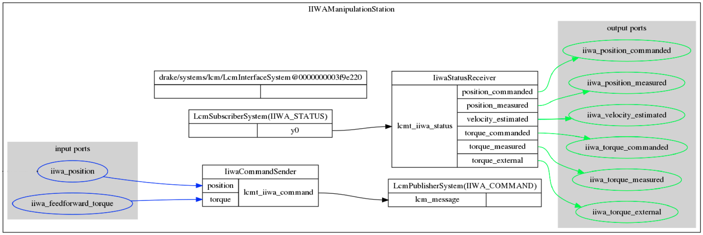
The LcmInterfaceSystem has no inputs nor outputs nor state nor parameters; it declares only an update event that pumps LCM messages into their subscribers if the LCM stack has message(s) waiting. The subscribers will then update their outputs using their own declared events
The LcmSubscriberSystem subscribes to the LCM data stream and outputs the received data through a single output port.
The LCMPublisherSystem has a single input port and outputs the received data to the LCM data stream at a specified update rate.
The IiwaStatusReceiver, defined in
iiwa_status_receiver.py parses the IIWA_STATUS LCM message into the following vector valued outputs:
- position_commanded
- position_measured
- velocity_estimated
- torque_commanded
- torque_measured
- torque_external
An example on using IiwaStatusReceiver is available in
example_iiwa_status_receiver.py
The IiwaCommandSender, defined in
iiwa_command_sender.py encodes the input into IIWA_COMMAND LCM message which is published by the LcmSubscriberSystem. It has the following two vector valued inputs accepting vectors of size 7.
- position
- torque
An example usage of IiwaCommandSender is available in
example_iiwa_command_sender.py. Be EXTREMELY CAUTIOUS before running this example, as it would instantaneously command 0 positions to joints. Don’t run this example unless all joints are near to zero position.
The MultibodyPlant models the external plant that has to be controlled and helps in the computation of its kinematics and dynamics.
The input and output ports of the individual systems inside inside a diagram has to be exported to outside so that other drake systems can interface with the inner systems. The ExportOutput and ExportInput methods of DiagramBuilder are used for this.
Examples
The codes of the examples used in this document are available at https://github.com/achuwilson/pydrake_iiwa
To run the examples, follow these steps
- STEP1: Make sure that the Kuka is in
AUTmode in SmartPad - STEP2: Select and run
DrakeFRITorqueDriverApplication from the Smartpad - STEP3: run
kuka_driverin the PC. This will cause the brakes on IIWA to release - STEP4: (optional) Start
drake-visualizerormeshcat-serverfor examples requiring visualization - STEP4: run the example
Joint Control
In this simple example, we make use of the drake JointSliders system to control the joint values of the robot.
The system diagram of the example is as follows:
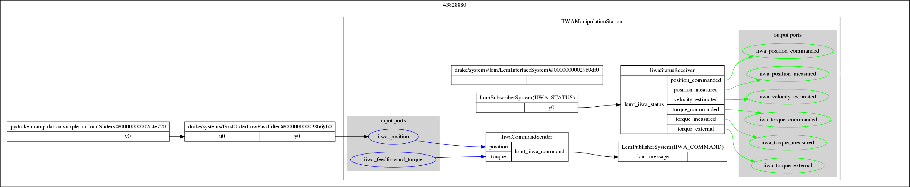
The output port of the JointSliders system is connected through a FirstOrderLowPassFilter to the iiwa_position port of the IiwaHardwareInterface manipulation station. The FirstOrderLowPassFilter helps to smoothen the motion by filtering out high frequency changes in position which may cause jerk.
Visualizing the robot state in Drake visualizers
Drake has multiple visualizers and uses the SceneGraph system to output the visualizations. By default, Drake comes with a VTK based visualizer which is located in /opt/drake/bin/drake-visualizer. We have to launch the visualizer before running the simulation.
Drake also has a Meshcat based visualizer which can display the output in a browser window. Run meshcat-server present in the same directory. Meshcat visualizer is greatly helpful when running Drake as IPython notebooks in Google Colab
The system diagram of the example is as follows:
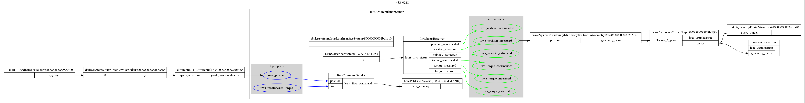
In the
example_iiwa_visualize.py example, the MultibodyPositionToGeometryPose system takes in the joint positions of the robot and outputs the pose output required by the SceneGraph system. The DrakeVisualizer and meshcat_visualizer queries the scenegraph system and updates the rendering.
The DrakeVisualizer looks as follows:
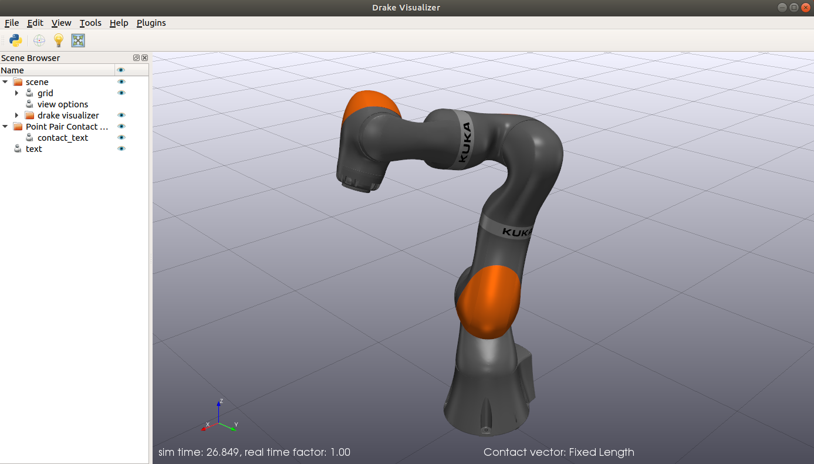
Adding an end effector
This example demonstrates how to add a custom end-effector/gripper to the IiwaManipulationStation. End effector models, either in URDF or SDF format could be imported and added to the MultibodyPlant before finalizing it. It also needs to be welded to the last link of IIWA.
Following image shows IIWA attached with the small blue finger defined in
models/onefinger.urdf:
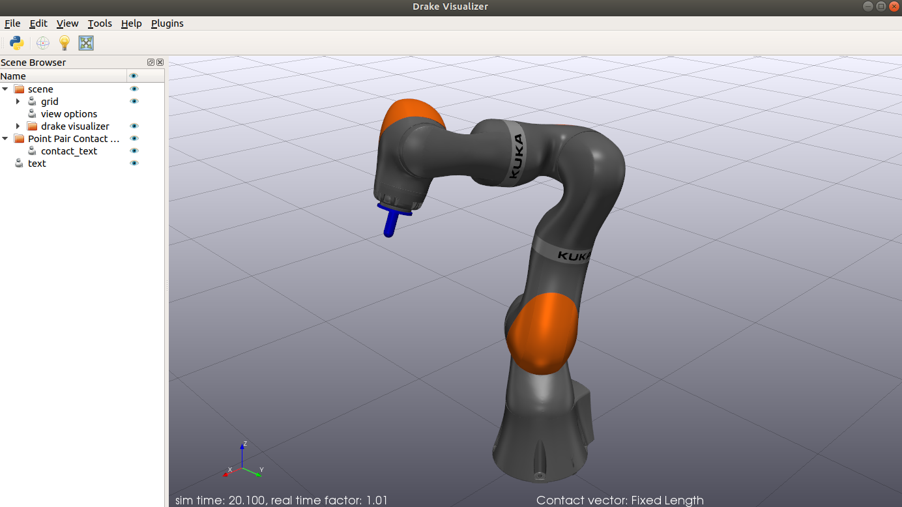
Once the end-effector is added to the MultibodyPlant, we can refer to it by the name defined in the URDF file.
Forward Kinematics
Forward Kinematics calculates the position of end effector/gripper in the world given the joint position values.
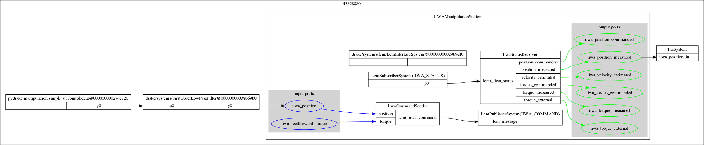
In this example, the low pass filtered values from the slider is used to set the joint positions of the IIWA hardware. The iiwa_position_measured output port of the manipulation station is connected to the FKSystem, where the joint values of the multibodyplant are updated. The EvalBodyPoseInWorld function can be used to evaluate the position of the body in the world.
Inverse Kinematics
Inverse Kinematics solves for the joint positions required to reach a particular end-effector pose.
Drake has a numeric InverseKinematics solver which formulates IK as a nonlinear optimization problem. We can specify non linear inequality constraints like minimum distance between bodies, position/orientation constraints, target gaze constraints etc. Refer to MIT 6.881 Lecture 15, Motion Planning, Part 1 for more insights on Inverse kinematics and declaring constraints. Corresponding IPython Notebook
Drake also has a
Differential Inverse Kinematics solver, which calculates joint velocities using Jacobian and integrates it to calculate the joint position. The
example_IK.py uses the differential IK method implemented in
differential_ik.py
The system diagram of the
example_IK.py is as follows:
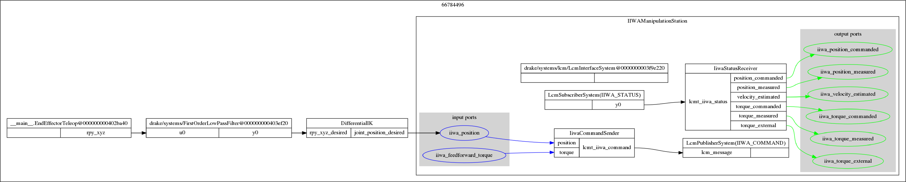
Estimating Cartesian Velocities
End effector velocities can be estimated by multiplying the robot Jacobian with joint velocities. Drake MultibodyPlant has the CalcJacobianSpatialVelocity method, which could be used to calculate the Spatial Jacobian.
The system diagram of the example is as follows:
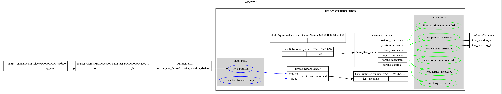
In
example_velocity_estimate.py, The output of EndEffectorTeleop is used to control the cartesian end effector position through the DifferentialIK system. The iiwa_velocity_estimated and iiwa_position_measured outputs of the manipulation station are used by the velocityEstimator system to calculate the Jacobian and corresponding end effector velocities.
Cartesian velocity control
WARNING: Pay close attention when running this example on the real robot. The end effector keeps on moving at the commanded velocity, until the slider is moved back to zero.
Joint velocities required to move the end effector at a desired velocity in cartesian space are computed using an inverse Jacobian controller.
The system diagram is as follows:
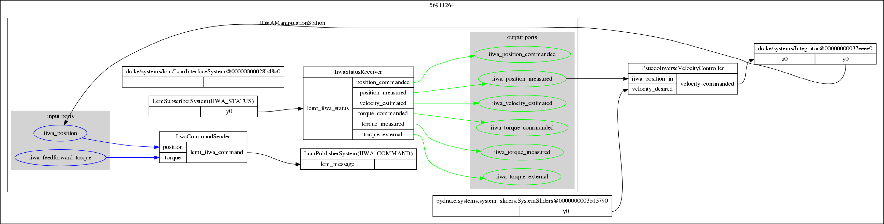
The desired end effector velocity from the slider and the current joint position is fed as inputs to the PseudoInverseVelocityController. It calculates the required joint velocities, which are integrated and fed as iiwa_position input.
Estimating Cartesian forces
IIWA has joint torque sensors at all the 7 joints. This example uses jacobian transpose to estimate the forces and in cartesian space at the end effector from the measured joint torques.
The system diagram of the example is as follows:
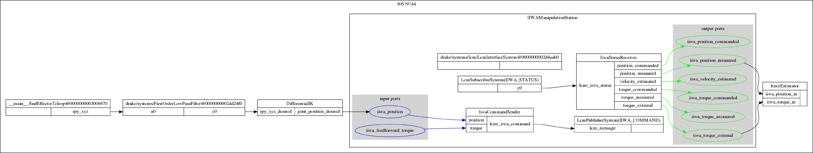
It looks similar to the velocity estimation system, except that in this case, there is a forceEstimator system that takes in iiwa_position_measured and iiwa_torque_external
Hybrid Force-Position control
In Hybrid force-position demo, the end effector is able to move to/maintain a position as well exert force in arbitrary directions.
We make use of the iiwa_feedforward_torque input to provide additional joint torques. These torques are calculated using Jacobian transpose pseudo-inverse in the FeedForwardForceController system. while running the demo, two windows will pop up, one for controlling the cartesian position and the other for the cartesian wrench.
The system diagram of the example is as follows:
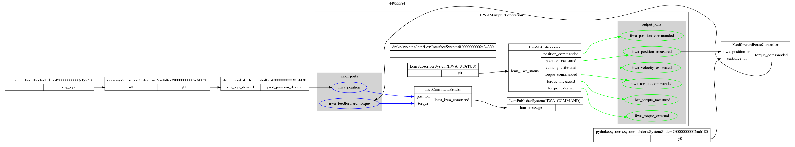
Motion Planning and Collision Avoidance
TODO #2
Gravity Compensation
TODO #3
Haptic Force Feedback
TODO #4